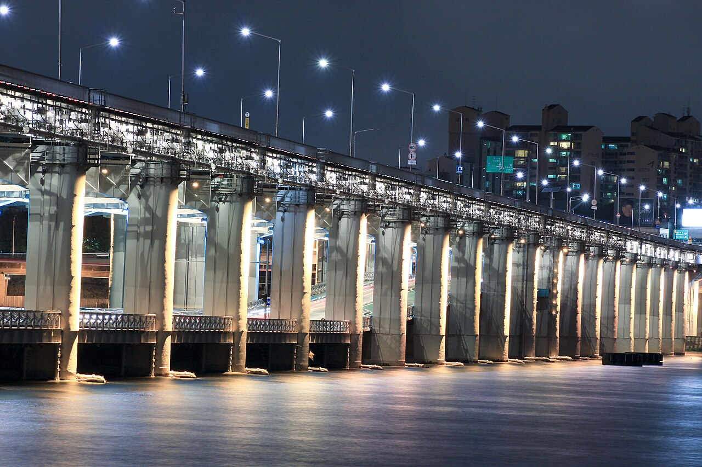

실내 · 지하상가
고투몰
옷과 액세서리 가게가 이어지는 지하 쇼핑길. 부담 없이 구경하며 서로의 취향을 알아가기 좋아요.
고투몰 지도
고속터미널역 3·7·9호선 · 센트럴시티(호남선) 방향에서 만나기
서로 다른 버스 터미널로 가지 않게 센트럴시티 방향을 먼저 맞춰요.
신세계 강남점 B1에서 각자 디저트를 골라 나눠 먹어요.
8-1·8-2번 출구에서 도보 약 15분. 잠수교와 세빛섬 주변을 걸어요.
돌아와서 딤섬을 나눠 먹거나, 파미에스테이션에서 따뜻한 정식을 먹어요.
달빛무지개분수는 올해 운영을 마쳤어요. 서울시 안내에 따르면 10월 31일에 가동을 종료했어요. 강변 바람이 세면 산책을 짧게 잡으세요.
고속터미널역에서 호남선 표지를 따라가요.
옷과 액세서리 가게를 돌며 서로에게 어울릴 소품을 하나씩 골라봐요.
스위트파크에서 간식을 고르거나 파미에파크R에서 앉아서 쉬어요.
호호식당이나 딤딤섬을 먼저 보고, 줄이 길면 고속터미널 파이브가이즈도 후보예요.
오후 식사는 주문 시간을 확인하세요. 파미에스테이션은 매장마다 브레이크타임과 주문 마감이 달라요.
역 주변 실내 세 곳, 해 질 무렵 걷기 좋은 강변 한 곳.
실내 · 지하상가
옷과 액세서리 가게가 이어지는 지하 쇼핑길. 부담 없이 구경하며 서로의 취향을 알아가기 좋아요.
고투몰 지도실내 · 신세계 강남점 B1
파이, 빵, 초콜릿을 한자리에서 비교할 수 있어요. 서로 다른 디저트를 골라 나눠 먹고, 자리가 없으면 포장하세요.
스위트파크 지도실내 · 센트럴시티
옛 기차역을 모티브로 한 복합 식음 공간. 카페와 식당을 가까이서 비교할 수 있어 비 오거나 추운 날 편해요.
파미에스테이션 지도야외 · 8-1·8-2번 출구에서 도보 약 15분
강변에서 잠수교와 반포대교를 한눈에 볼 수 있어요. 세빛섬 주변까지 걸으며 물가에서 사진 한 장 남겨봐요.
서울시 도보 안내둘이 나눠 먹기 좋은 메뉴와, 앉아서 쉴 만한 곳을 골랐어요.
저녁 · 센트럴시티
하가우, 가지딤섬, 샤오롱바오처럼 작은 접시를 여러 개 시켜 나눠 먹기 좋아요.
저녁 · 파미에스테이션 1F
사케동, 가츠 정식 같은 일본 가정식. 각자 한 그릇씩 편하게 먹고 싶을 때 어울려요.
간단한 식사 · 신반포로 176
버거는 각자 토핑을 고르고 프라이는 하나를 나눠 먹기 좋아요. 프라이는 땅콩기름에 튀겨요.
디저트 · 스위트파크 B1
바삭한 원형 밀푀유를 파는 디저트 매장. 한 개를 골라 둘이 맛보기 좋아요.
커피 · 센트럴시티
높은 천장의 리저브 매장. 디저트 구경 후 앉아서 이야기하거나, 한강에 다녀와 몸을 녹이기 좋아요.
금요일 저녁엔 대기할 수 있어요. 방문 직전에 영업시간, 브레이크타임, 재고를 매장 안내에서 확인하세요.